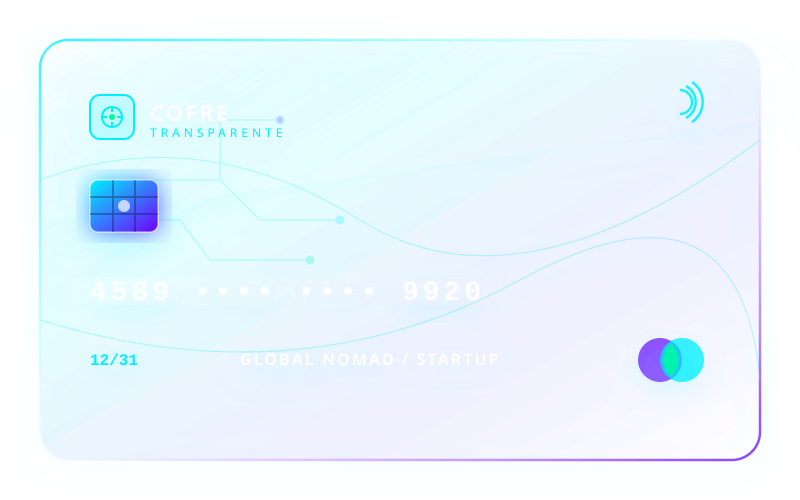
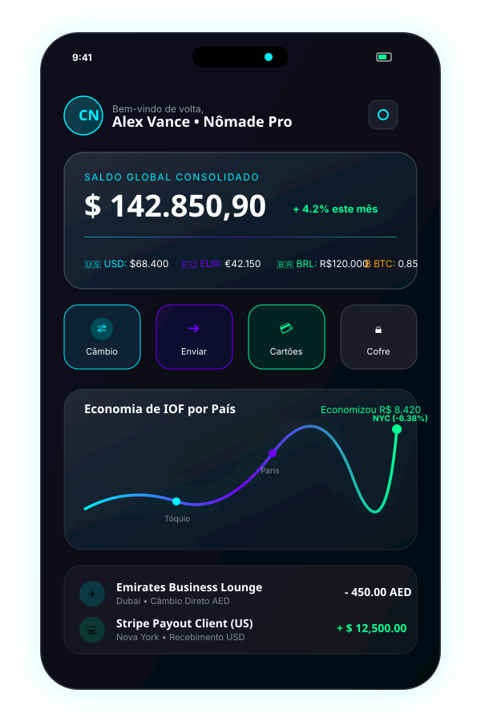

Multi-Moeda Global
Gerencie e converta fundos em +70 moedas globais e criptomoedas em tempo real utilizando a cotação comercial oficial sem spread oculto.
O primeiro cartão internacional de cristal para nômades digitais e startups globais. Zero IOF abusivo, conversão instantânea em mais de 70 moedas e segurança impenetrável.

Construído para atender as exigências de quem trabalha, viaja e escala negócios globalmente sem limites geográficos.
Gerencie e converta fundos em +70 moedas globais e criptomoedas em tempo real utilizando a cotação comercial oficial sem spread oculto.
Tokens dinâmicos que se autodestroem após o uso, bloqueio imediato via biometria e monitoramento de transações por Inteligência Artificial.
Até 3% de cashback em todas as compras internacionais e suporte concierge dedicado para reserva de salas VIP e voos de emergência.
Isenção total de taxas de manutenção anual para nômades digitais e contas corporativas de startups. Transacione pagando 0% de IOF extra.
Veja quanto você economiza em taxas comparado aos bancos tradicionais:

Histórias reais de quem utiliza o Cofre Transparente em dezenas de países.
"Como desenvolvedor que trabalha entre Tóquio e Bali, economizei mais de $4.000 em taxas no último ano. O cartão transparente é simplesmente incrível e chama atenção em qualquer lugar."
"Gerenciar os pagamentos da nossa startup em dólares, euros e reais era um pesadelo tributário até encontrarmos o Cofre Transparente. A emissão de cartões virtuais corporativos é instantânea."
"A velocidade do câmbio comercial e o cashback automático em criptomoedas revolucionaram minha rotina de viagens por Dubai e Europa. Recomendo de olhos fechados!"
Tudo o que você precisa saber sobre o Cofre Transparente.
O Cofre Transparente opera com contas internacionais sediadas em jurisdições de câmbio direto. Suas conversões são realizadas via conta internacional própria, aplicando alíquota reduzida de IOF de apenas 1,1% na conversão da conta em vez dos 4,38% cobrados pelos cartões de crédito bancários tradicionais.
Assim que o seu cadastro for aprovado, o seu cartão virtual é emitido imediatamente na hora no aplicativo. O cartão físico de vidro cristalino translúcido é enviado via courrier expresso com rastreamento internacional em até 3 a 7 dias úteis para qualquer endereço no Brasil, Estados Unidos ou Europa.
Sim! Oferecemos suporte completo para contas PJ internacionais e nacionais, com emissão ilimitada de cartões corporativos virtuais para sua equipe, controle de limites por membro e integração direta via API de pagamentos.
O Cofre Transparente utiliza a rede global Mastercard/Visa com tecnologia contactless (NFC) aceita em mais de 210 países e territórios, em milhões de estabelecimentos comerciais, caixas eletrônicos (ATMs) e plataformas digitais.
Conheça nosso centro operacional e laboratório de inovação em tecnologia financeira.